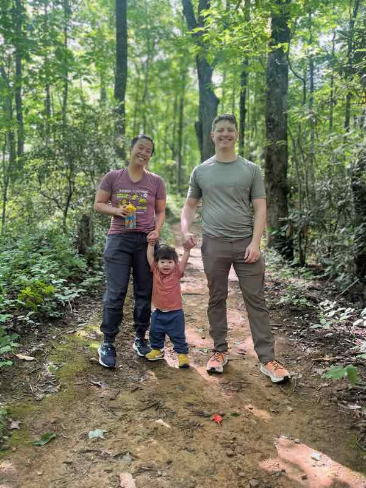

Designing at the seam of systems & craft.
Senior SaaS Product Designer in Austin, TX. I partner directly with founders, product leaders, and engineering teams to turn ambiguous requirements, dense B2B workflows, and AI opportunities into intuitive software that ships.
Leadership
Systems before screens. Polished UI doesn't matter if the underlying logic falls apart the moment engineers encounter messy edge cases in production.
At i4cp, I'm the sole product designer. I write the PRDs, maintain the design tokens, and work directly with our VP of Product and engineers to shape the roadmap. When requirements are ambiguous or data models don't match user workflows, I dig in until the team has a crisp, buildable spec.
Before this at D-Tools, I facilitated twice-weekly design reviews with five designers and six PMs to stress-test assumptions before anyone opened an IDE. The best sessions were the ones where we uncovered hidden technical friction and shifted direction before writing code.
-
Concept to production
User research, PRDs, component specs, and staging prototypes
-
Product strategy
Information architecture, technical tradeoffs, and design tokens
-
400+Group critique sessions
Coaching designers to interrogate constraints and user workflows before polishing pixels
-
AI-assisted building
Prototyping in Cursor to validate layout physics, keyboard focus, and responsive behavior early
-
Custom AI assistant
A retrieval-augmented chatbot using Gemini and Supabase pgvector to answer questions from real project notes
Builder
Design in the browser. You learn ten times more about an interaction by resizing a real browser window than by clicking through static artboards.
I've always liked building what I design. With modern coding tools like Cursor, I can take a rough concept directly into working HTML and CSS to see how it actually feels. This entire portfolio was built that way.
My coding background goes back nearly a decade, building responsive web interfaces for school board tools at TASB and transit ticketing apps at Bytemark. Using AI tools today feels like a natural continuation of that. It takes repetitive typing off my plate so I can focus on product decisions.
AI doesn't supply product judgment. You still have to establish hierarchy, handle empty states, and decide what to leave off the screen. What it does give you is velocity: turning an idea into working markup in an afternoon so you can evaluate the experience directly.

Life Lately
I live in Austin with my wife, our toddler, and two cats named Pickles and Pesto. Most of life right now revolves around my son: parks, swimming, bedtime stories, snacks in places snacks absolutely should not be, and getting outside whenever we can.
When I'm not designing, I'm usually captaining a beer-league hockey team, trying to learn guitar riffs that are definitely above my skill level, or cooking recipes stolen from our travels. I grew up in Pittsburgh. I definitely don't miss scraping ice off my windshield in February, but I do miss a real white Christmas.